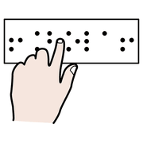
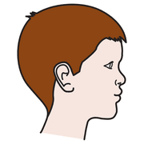
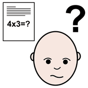
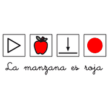
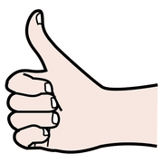

Modulo 6, capire e intervenire
Le storie sociali
Quando un comportamento nasce da una situazione sociale che l'alunno non capisce, serve uno strumento che la renda chiara. Le storie sociali fanno proprio questo.
raccontano
l'ovvio, che
ovvio non è
Che cosa sono
 storia
storia
leggere capire
capireLe storie sociali sono brevi racconti, ideati negli anni Novanta da Carol Gray, che descrivono una situazione della vita di tutti i giorni dal punto di vista dell'alunno e con il suo stile di apprendimento.
- Descrivono una situazione, un concetto o un'abilità sociale.
- Spiegano cose che per quasi tutti sono ovvie, ma non per chi fatica a comprendere le regole sociali.
- Raccontano che cosa fanno le persone e perché lo fanno.
- Suggeriscono come comportarsi, senza ordini né rimproveri.
Se il problema di comportamento nasce dalla comunicazione, se ne cerca la funzione (modulo 5). Se nasce da una relazione o da una situazione poco chiara, serve uno strumento che la chiarisca: la storia sociale.
Un caso dalla classe

bambino cortile
cortile
problemaElia, terza primaria, all'intervallo non vuole uscire in cortile. Quando la maestra lo accompagna verso la porta si siede a terra e si copre le orecchie.
- Analisi ABCSuccede ogni giorno, solo per l'intervallo in cortile, non per la palestra.
- OsservazioneNei minuti prima dell'uscita e all'arrivo in cortile: urla, corse, il pallone che colpisce il muro.
- AscoltoCon le immagini, Elia racconta che ha paura del pallone e del rumore «quando tutti gridano insieme».
Non è un rifiuto delle regole: il cortile è imprevedibile e troppo rumoroso. Insieme alla storia, si concorda un posto più tranquillo sotto il portico e l'uso delle cuffie antirumore.
prima persona,
frasi semplici
La storia
 libroleggere
libroleggere contento
contentoL'intervallo in cortile
Quando suona la campanella delle 10.30, è l'ora dell'intervallo.
Se non piove, i bambini della mia classe escono in cortile.
In cortile molti bambini corrono e giocano a pallone. Quando giocano, spesso gridano perché sono contenti.
A volte il pallone va lontano. Le maestre controllano che nessuno si faccia male.
Sotto il portico c'è una panchina dove si sta più tranquilli. Lì posso guardare il cortile o giocare con le carte.
Se il rumore è troppo forte, posso mettere le mie cuffie.
Proverò a uscire in cortile con la mia classe e ad andare alla panchina del portico.
La maestra è contenta quando passo l'intervallo con i miei compagni.
I tipi di frase

frase scrivere
scrivere parola
parola| Tipo | A che cosa serve | Nella storia di Elia |
|---|---|---|
| Descrittive | Dicono chi, dove, quando, che cosa succede e perché, senza opinioni. | «In cortile molti bambini corrono e giocano a pallone.» |
| Di prospettiva | Descrivono pensieri, emozioni o reazioni degli altri. | «Quando giocano, spesso gridano perché sono contenti.» «La maestra è contenta quando…» |
| Direttive | Suggeriscono un comportamento possibile, in modo gentile. | «Proverò a uscire in cortile…» |
| Affermative | Rafforzano il messaggio con un'idea condivisa e rassicurano. | «Le maestre controllano che nessuno si faccia male.» |
Le frasi che descrivono devono essere molte di più di quelle che dicono che cosa fare: la storia spiega, non ordina.
da rileggere
prima di
scrivere
Le regole d'oro
 regole
regole
positivobreve- Un obiettivo chiaroChe cosa voglio che capisca? Una situazione per storia.
- Informazioni raccolte beneOsservazione, ABC, il punto di vista dell'alunno.
- Su misuraLunghezza, parole e immagini adatte alle sue capacità.
- Prima o terza persona«Io» o «Elia», mai «tu».
- Niente comportamenti sbagliatiNon si descrive quello che non deve fare.
- Parole letteraliAttenzione a frasi come «dai una mano» o «facciamo un salto in biblioteca».
- Al momento giustoSi legge con calma, prima della situazione, mai durante una crisi o come rimprovero dopo.
Prova in classe
scriverestoria gruppo
gruppoScegli una situazione e scrivi una storia sociale di 6-10 frasi, con un'immagine per frase:
- Domani arriva una supplenteLa maestra di classe è assente per un giorno.
- La prova di evacuazioneSuona l'allarme e si esce in fila in giardino.
- La visita dal dentistaPer un controllo, dopo la scuola.
- L'uscita didatticaIn pullman, in un posto mai visto.
- Il turno al giocoAspettare che un compagno finisca prima di usare il gioco.
- Una maglia diversaIndossare un vestito nuovo invece della solita felpa.